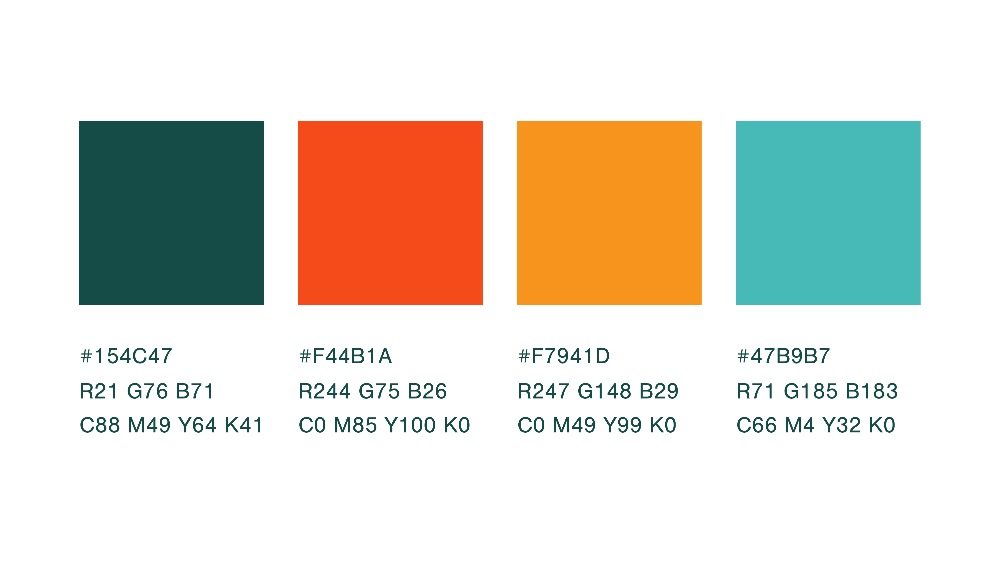

Helping the people you love stay safely home — for years to come.
Same clinical team behind both services below — pick the one that fits what you need right now, or call and we'll help you sort it out.
A licensed PT or OT evaluates the home in person and recommends grab bars, ramps, bathroom conversions, and other physical changes — based on how this specific person actually moves.
Evolve by TLS Global uses radar and smart lighting to detect falls the moment they happen — no wearables, no cameras — with a real person responding around the clock.
Not sure which one fits? Many families use both together. Call (918) 216-9303 and we'll walk you through it.